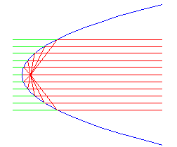

|
Let's observe the phenomena that the parallel beams reflect on the
parabola face and gather at one point. The point is the focus of
parabola. And,investigate the relation between the position of the focus
and the shape of the parabola. |
 |
How to use this applet.1.Press "Increase a" button to increase a.2.Press "Decrease a" button to Decrease a. 3.Press "Beam" button to shoot the beam. 4.Press "Init" button to go to the first step. |